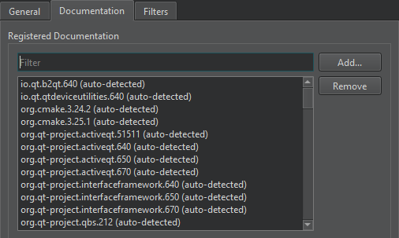

Add external documentation
You can view external documentation in the Help mode. To add documentation or replace the documentation that ships with Qt Creator and Qt:
- Create a .qch file from your documentation.
For information on how to prepare your documentation and create a .qch file, see The Qt Help Framework.
- To add the .qch file to Qt Creator, go to Preferences > Help > Documentation > Add.

See also How To: Read Documentation.